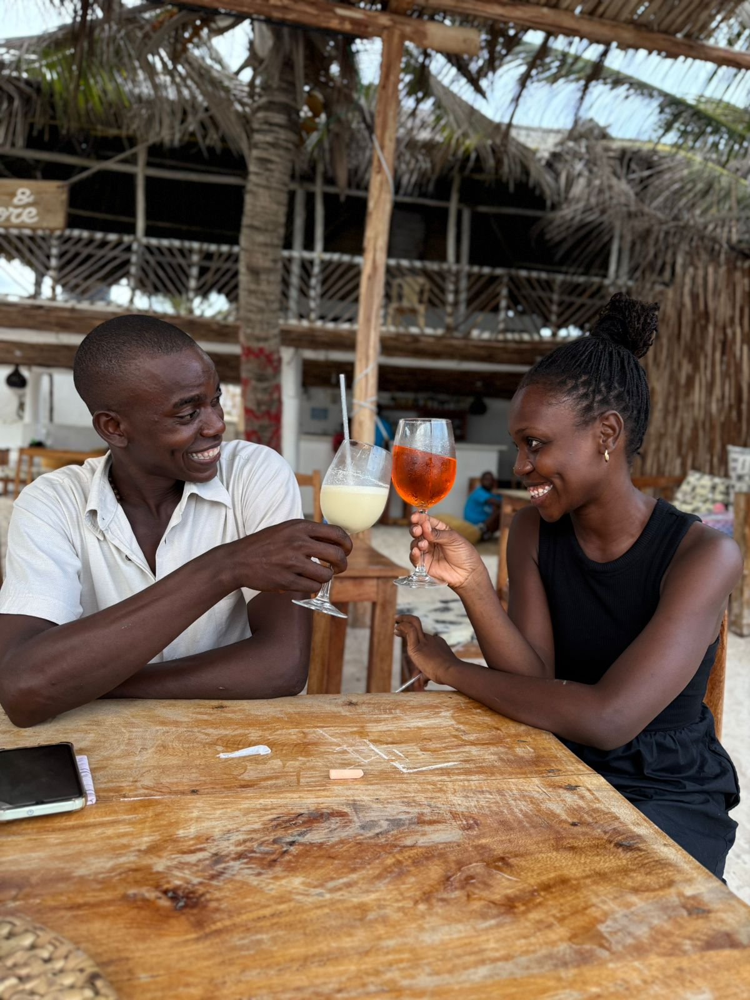
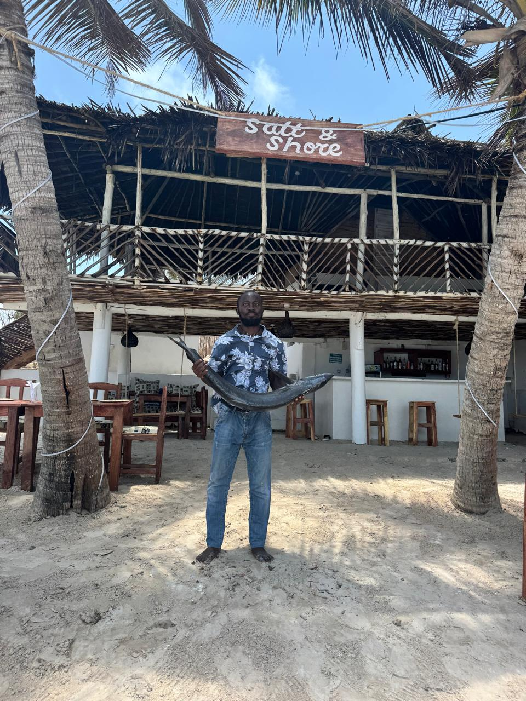
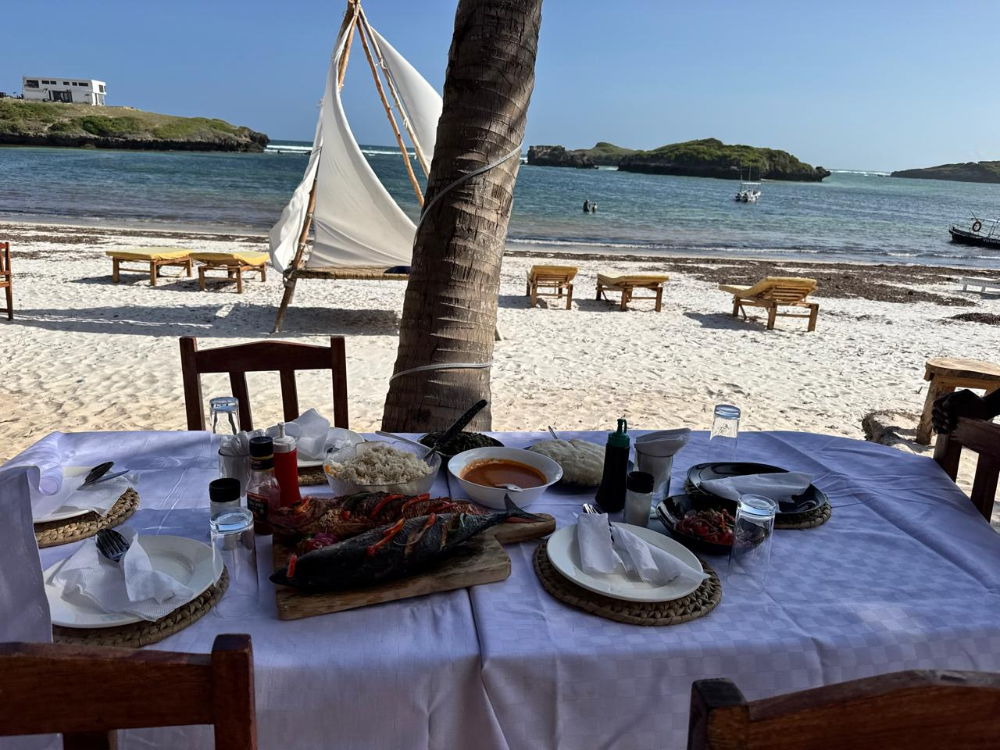

A place born from the sea, built on passion.

Salt & Shore was born out of a simple dream — to create a place where the rhythm of the ocean sets the pace and every meal feels like a celebration. Founded by two friends with a shared love of the coast and honest food, we opened our doors with nothing but a handful of recipes, a few weathered tables and an unbeatable view.
What started as a small beachside kitchen quickly grew into something we never expected — a gathering place for locals, travellers and food lovers who all found something they were looking for right here on the shore.
Perched right on the water's edge, Salt & Shore sits in one of the most naturally beautiful spots on the coast. The sound of waves is never far away, the breeze carries the salt of the ocean, and every table has a story of its own.
We chose this location deliberately — because we believe the setting is part of the meal. When you dine with us, you're not just eating. You're experiencing the coast in its most authentic form.


At Salt & Shore, we keep it simple — fresh ingredients, prepared with care, served with warmth. We work closely with local fishermen and suppliers to bring you produce that is as close to the source as possible.
The story is still being written — and we'd love for you to be part of it.
Reserve a Table